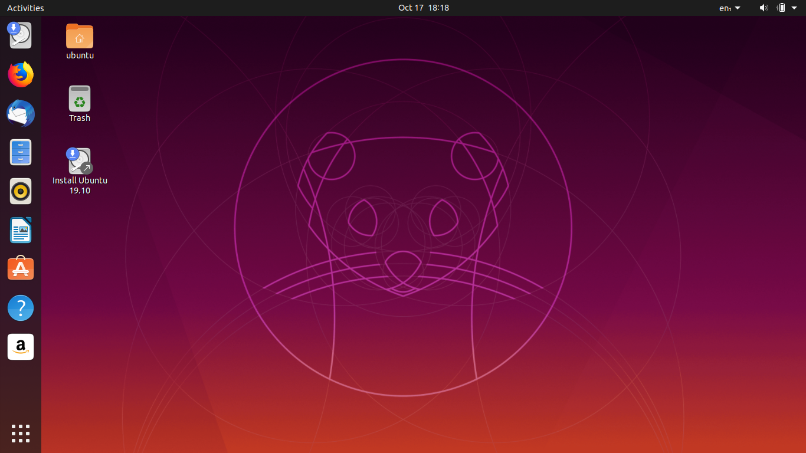

Aunque Linux es una de las plataformas para computadoras más flexibles y personalizables del mundo, para conseguir todo su potencial necesitas de un buen conocimiento de computación y una distribución adecuada. También conocidas como distros, contienen herramientas y bibliotecas, software adicional y documentación, entre otros elementos, para facilitar su uso. Creadas por comunidades de software y para distintos enfoques, estas son las mejores distribuciones de Linux que puedes obtener y que no se achican ante Windows o macOS.
Las distribuciones Linux pueden adaptarse a cualquier configuración, ya sean computadoras portátiles, PC y servidores, e incluso puedes instalarlas en tu Chromebook, PC o Mac. Sigue leyendo para conocer mejor las mejores distribuciones de Linux que podrás encontrar a día de hoy.
Aqui hablaremos de 2 distribuciones muy completas con relación a software
Linux Mint es una distro basada en Ubuntu (o Debian, dependiendo de la edición) que lleva funcionando desde su lanzamiento inicial el 27 de agosto de 2006, por lo que tras casi 14 años el proyecto ha ido creciendo. En 2010, sus desarrolladores lanzaron una versión basada en Debian de la rama testing, versión que hoy en día está en la rama stable.
Es una distro de Linux que su visión es la de ofrecer un sistema operativo moderno, elegante y que sea potente y fácil de usar, dispone de tres entornos de escritorio principales que son Cinnamon, Mate y Xfce y dispone de 2 ediciones, una basada en Ubuntu y otra basada en Debian.
Linux Mint es la versión original y tiene como base Ubuntu. Dispone un kernel Linux monolítico que permite el soporte para las plataformas x86 (32 bits), x86_64 (64 bits) e Itanium IA-32. Las interfaces gráficas predeterminadas son MATE, Cinnamon y Xfce. El método de actualización es APT y su sistema de gestión de paquetes es dpkg.
Ubuntu es una filosofía sudafricana vinculada a la lealtad y la solidaridad. El término proviene de las lenguas zulú y xhosa y puede traducirse como “humanidad hacia otros” o “soy porque nosotros somos”
La verdad, la reconciliación o la solidaridad son otros de los valores y principios que se encuentran íntimamente relacionados con esta filosofía de África. Una “doctrina” esta que se ha convertido en el pilar fundamental de la nueva república de Sudáfrica pues se considera vital para poder llevarse a cabo lo que se le ha dado en llamar renacimiento africano.
Esta noción se hizo popular en el ámbito de la tecnología ya que Ubuntu es el nombre elegido por la compañía británica Canonical Ltd. para denominar a una distribución GNU/Linux que se basa en Debian GNU/Linux.
En este sentido, Ubuntu es un sistema operativo enfocado a la facilidad de uso e instalación, pensado para el usuario promedio. Por eso su lema es “Ubuntu: Linux para seres humanos”.
Ubuntu está compuesto por diversos paquetes de software que, en su mayoría, son distribuidos bajo código abierto y licencia libre. Este sistema operativo no tiene fines lucrativos (se consigue de manera gratuita) y aprovecha las capacidades de los desarrolladores de la comunidad para mejorar sus prestaciones. Su facilidad de uso es una de las razones que han llevado a que Ubuntu cada vez se haya convertido en una presencia más constante dentro del mercado tecnológico. No obstante, tampoco hay que olvidar que otro de estos motivos es el conjunto de aplicaciones que lleva incorporadas para satisfacción de sus usuarios.
